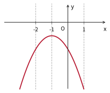
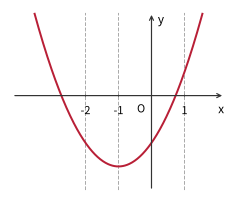

別冊練習問題 4 の解答 グラフから係数・式の符号を読む
(1)
図①〜③の各グラフについて、\(a,\ b,\ c,\ b^2-4ac\) と、点線の位置の \(x\) 座標を小さい順に \(m_1,\ m_2,\ m_3\) としたときの \(f(m_1),\ f(m_2),\ f(m_3)\) の符号を答えよ。



下に凸なので \(a>0\)。\(y\) 切片は正：\(c>0\)。軸は右側（\(-\dfrac b{2a}>0\)）で \(a>0\) なので \(b<0\)。\(x\) 軸と2点で交わるので \(b^2-4ac>0\)。
\(x=-1\) で \(y>0\)、\(x=1\) で \(y<0\)、\(x=3\) で \(y>0\)。
【答案】
\[a>0,\ b<0,\ c>0,\ b^2-4ac>0,\ f(-1)>0,\ f(1)<0,\ f(3)>0\]答
(2) 図②のグラフ
上に凸なので \(a<0\)。\(y\) 切片は負：\(c<0\)。軸は左側（\(-\dfrac b{2a}<0\)）で \(a<0\) なので \(b<0\)。\(x\) 軸と交わらないので \(b^2-4ac<0\)。グラフは全体が \(x\) 軸の下なので、どの \(x\) でも \(y<0\)。
【答案】
\[a<0,\ b<0,\ c<0,\ b^2-4ac<0,\ f(-2)<0,\ f(-1)<0,\ f(1)<0\]答
(3) 図③のグラフ
下に凸なので \(a>0\)。\(y\) 切片は負：\(c<0\)。軸は左側（\(-\dfrac b{2a}<0\)）で \(a>0\) なので \(b>0\)。\(x\) 軸と2点で交わるので \(b^2-4ac>0\)。
\(x=-2\) で \(y<0\)、\(x=-1\) で \(y<0\)、\(x=1\) で \(y>0\)。
【答案】
\[a>0,\ b>0,\ c<0,\ b^2-4ac>0,\ f(-2)<0,\ f(-1)<0,\ f(1)>0\]答